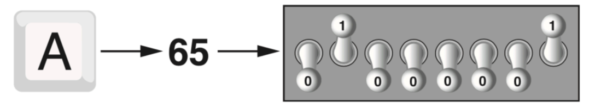
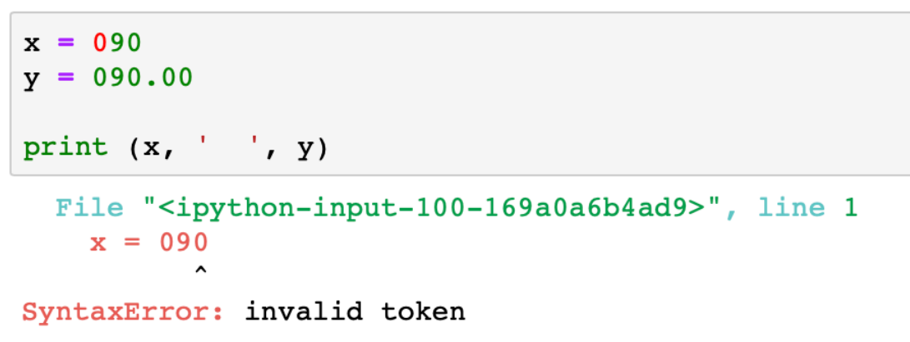
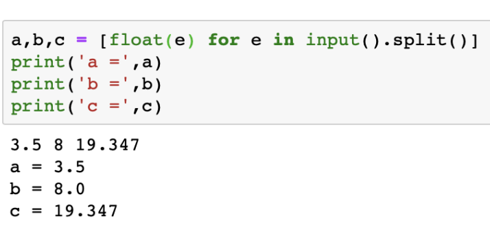
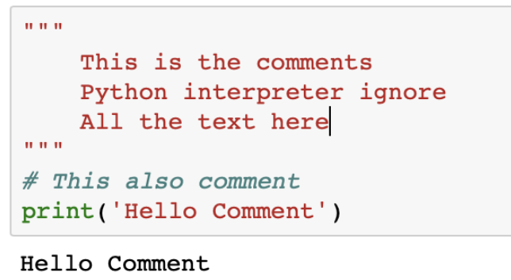

<!DOCTYPE HTML>
<!--
	Stellar by HTML5 UP
	html5up.net | @ajlkn
	Free for personal and commercial use under the CCA 3.0 license (html5up.net/license)
-->
<html>

<head>
    <title>Lectour 01</title>
    <link rel="icon" href="./insert_images/INE_logo.jpg" type="image/icon type" />
    <meta charset="utf-8" />
    <meta name="viewport" content="width=device-width, initial-scale=1, user-scalable=no" />
    <link rel="stylesheet" href="assets/css/main.css" />
    <noscript>
        <link rel="stylesheet" href="assets/css/noscript.css" />
    </noscript>
</head>

<body class="is-preload">

    <!-- Wrapper -->
    <div id="wrapper">

        <!-- Header -->
        <header id="header">
            <h2>Lecture</h2>
            <span class="logo"><svg xmlns="http://www.w3.org/2000/svg" width="150px" height="150px"
                    viewBox="0 0 320 512">
                    <!--! Font Awesome Pro 6.2.0 by @fontawesome - https://fontawesome.com License - https://fontawesome.com/license (Commercial License) Copyright 2022 Fonticons, Inc. -->
                    <path fill="#ffd42d"
                        d="M0 192C0 103.6 71.6 32 160 32s160 71.6 160 160V320c0 88.4-71.6 160-160 160S0 408.4 0 320V192zM160 96c-53 0-96 43-96 96V320c0 53 43 96 96 96s96-43 96-96V192c0-53-43-96-96-96z" />
                </svg>
                <svg xmlns="http://www.w3.org/2000/svg" width="150px" height="150px" viewBox="0 0 256 512">
                    <!--! Font Awesome Pro 6.2.0 by @fontawesome - https://fontawesome.com License - https://fontawesome.com/license (Commercial License) Copyright 2022 Fonticons, Inc. -->
                    <path fill="#016ed5"
                        d="M160 64c0-11.8-6.5-22.6-16.9-28.2s-23-5-32.9 1.6l-96 64C-.5 111.2-4.4 131 5.4 145.8s29.7 18.7 44.4 8.9L96 123.8V416H32c-17.7 0-32 14.3-32 32s14.3 32 32 32h96 96c17.7 0 32-14.3 32-32s-14.3-32-32-32H160V64z" />
                </svg></span><br />
            <sup><b><a href="https://fontawesome.com/" target="_blank">fontawesome.com</a></b></sup>

            <p><sub>Make by <a href="https://www.instagram.com/likesxxzz2/" target="_blank">Chanakan Toursupap</a><br />
                    Information by <a href="https://scholar.google.co.th/citations?user=htY3F_IAAAAJ&hl=en"
                        target="_blank">Anirach
                        Mingkhwan</a></sub></p>
        </header>
        <nav id="nav">
            <ul>
                <li><a href="#Print_Command" class="active">Print Command</a></li>
                <li><a href="#Computer_Programming" class="active">Computer and Programming</a></li>
                <li><a href="#Program_Design" class="active">Program Design</a></li>
                <li><a href="#Variable" class="active">Variable</a></li>
                <li><a href="#Data_Type" class="active">Data Type</a></li>
                <li><a href="#Operators" class="active">Operators</a></li>
                <li><a href="#Input" class="active">Input</a></li>
                <li><a href="#Comments" class="active">Comments</a></li>
                <li><a href="index.html" class="active">Home Page</a></li>
            </ul>
        </nav>

        <!-- Main -->
        <div id="main">
            <section id="Print_Command" class="main">
                <h1>Print Command</h1>

                <ol>
                    <li>Print String</li>
                    <li>Print Numeric</li>
                    <li>Print String + Numeric</li>
                    <li>Print String + String</li>
                    <li>Print Numeric + Numeric</li>
                </ol>
                <hr>
                <h2><b>Print String</b></h2>
                <blockquote>
                    <ul class="alt">
                        <li><code>print("Hello World")</code><br />
                            <b>Hello World</b>
                        </li>
                        <li><code>print("Information and Network Engineering")</code><br />
                            <b>Information and Network Engineering</b>
                        </li>
                        <li><code>print("Hello Anirach you will be success")</code><br />
                            <b>Hello Anirach you will be success</b>
                        </li>
                        <li><code>print("I'm hungry")</code><br />
                            <b>I'm hungry</b>
                        </li>
                        <li><code>print('He ask me "Who got the book?"')</code><br />
                            <b>He ask me "Who got the book?"</b>
                        </li>
                        <li><code>print("I'm good and \"I will do my best\"")</code><br />
                            <b>I'm good and "I will do my best"</b>
                        </li>
                        <li>
                            <code>print('/\\')</code><br />
                            <b>/\</b>
                        </li>
                        <li>
                            <code>print('\ta\na\ta\ta\n\ta')</code><br />
                            <b>&emsp;&emsp;&emsp;a&emsp;&emsp;&emsp;<br />
                                a&emsp;&emsp;&#160;a&emsp;&emsp;&#160;a<br />
                                &emsp;&emsp;&#160;&#160;a</b>
                        </li>
                        <li>
                            <pre><code>print('''\ta
a\ta\ta
\ta'''</code></pre>
                            <b>&emsp;&emsp;&emsp;a&emsp;&emsp;&emsp;<br />
                                a&emsp;&emsp;&#160;a&emsp;&emsp;&#160;a<br />
                                &emsp;&emsp;&#160;&#160;a</b>
                        </li>
                    </ul>
                </blockquote>
                <hr>
                <h2><b>Print Numeric</b></h2>
                <blockquote>
                    <ul class="alt">
                        <li>
                            <code>print('100.00')</code><br>
                            <b>100.00</b>
                        </li>
                        <li>
                            <code>print('%d' %100)</code><br>
                            <b>100</b>
                        </li>
                        <li>
                            <code>print('%d' %100.58)</code><br>
                            <b>100</b>
                        </li>
                        <li>
                            <code>print('%f' %-100.89)</code><br>
                            <b>-100.890000</b>
                        </li>
                        <li>
                            <code>print('%.2f' %100.89)</code><br>
                            <b>100.89</b>
                        </li>
                        <li>
                            <code>from math import pi</code><br>
                            <code>print('%.2f' %pi)</code><br>
                            <b>3.14</b>
                        </li>
                        <li>
                            <code>from math import pi</code><br>
                            <code>print('%.4f' %pi)</code><br>
                            <b>3.1416</b>
                        </li>
                        <li>
                            <code>from math import pi</code><br>
                            <code>print('%.50f' %pi)</code><br>
                            <b>3.14159265358979311599796346854418516159057617187500</b>
                        </li>
                    </ul>
                </blockquote>
                <hr>
                <h2><b>Print String + Numeric</b></h2>
                <blockquote>
                    <ul class="alt">
                        <li>
                            <code>print('My age is', 25,'I have', 3500.50,'Bth.')</code><br>
                            <b>My age is 25 I have 3500.5 Bth.</b>
                        </li>
                        <li>
                            <code>print('My age is %d I have %.2f Bth.' %(25,3500.50))</code><br>
                            <b>My age is 25 I have 3500.50 Bth.</b>
                        </li>
                        <li>
                            <code>print('My age is' + str(25)+' I have '+ str(3500.50)+' Bth.')</code><br>
                            <b>My age is 25 I have 3500.5 Bth.</b>
                        </li>
                        <li>
                            <code>print('5+4 =',5+4)</code><br>
                            <b>5+4 = 9</b>
                        </li>
                        <li>
                            <code>print('5+4 = %.2f' %(5+4))</code><br>
                            <b>5+4 = 9.00</b>
                        </li>
                        <li>
                            <code>print('5+4 = ' + str(5+4))</code><br>
                            <b>5+4 = 9</b>
                        </li>
                    </ul>
                </blockquote>
                <hr>
                <h2><b>Print String + String</b></h2>
                <blockquote>
                    <ul class="alt">
                        <li>
                            <code>print("I'm Anirach","I'll keep practicing!")</code><br>
                            <b>I'm Anirach I'll keep practicing!</b>
                        </li>
                        <li>
                            <code>print("I'm Anirach" + "I'll keep practicing!"</code><br>
                            <b>I'm Anirach I'll keep practicing!</b>
                        </li>
                    </ul>
                </blockquote>
                <hr>
                <h2><b>Print Numeric + Numeric</b></h2>
                <blockquote>
                    <ul class="alt">
                        <li>
                            <code>print(1, 1, 2, 3, 5, 8, 13, 21, 34, 55)</code><br>
                            <b>1 1 2 3 5 8 13 21 34 55</b>
                        </li>
                        <li>
                            <code>print('%d %d %d %d %d %d %d %d %d %d' %(1, 1, 2, 3, 5, 8, 13, 21, 34, 55))</code><br>
                            <b>1 1 2 3 5 8 13 21 34 55</b>
                        </li>
                    </ul>
                </blockquote>
                <hr>
                <h2><b>Print() Exercises</b></h2>

                <span class="image main"></span>
                <ul class="actions stacked">
                    <li><a href="https://holypython.com/beginner-python-exercises/exercise-1-print/" class="button fit"
                            target="_blank">holypython.com</a></li>
                </ul>

            </section>
            <section id="Computer_Programming" class="main">
                <h1>Computer and Programming</h1>

                <p>Before we begin exploring the concepts of programming, you need to understand
                    a few basic things about computers and how they work.</p>
                <p>The physical devices that a computer is made of are referred to as the computer's
                    hardware. The programs that run on a computer are referred to as software.</p>
                <p>Computers can do such a wide variety of things because they can be
                    programmed. This means that computers are not designed to do just one job, but
                    to do any job that their programs tell them to do. A program is a set of instructions
                    that a computer follows to perform a task.</p>
                <span class="image main"></span>
                <hr>
                <h2><b>Software</b></h2>
                <blockquote>
                    <h3>System software</h3>
                    <ul>
                        <li>Operating Systems: Windows, Mac OS, Linux</li>
                        <li>Utility Programs: Back up, Virus scanners, Compression</li>
                        <li>Software Development: Assemblers, Compilers, Interpreter</li>
                    </ul>
                    <h3>Application software</h3>
                    <ul>
                        <li>Microsoft word, PowerPoint, Pages, Editor, Photoshop</li>
                    </ul>
                </blockquote>
                <hr>
                <h2><b>How Computer Store DATA</b></h2>
                <p>All data that is stored in a computer is converted to sequences of 0s and 1s.</p>
                <p>A computer's memory is divided into tiny storage locations known as bytes. One
                    byte is only enough memory to store a letter of the alphabet or a small number. In
                    order to do anything meaningful, a computer has to have lots of bytes. Most
                    computers today have millions, or even billions, of bytes of memory.</p>
                <span class="image main"></span>
                <span class="image main"></span>
                <span class="image main"></span>
                <hr>
                <h2><b>How Programs Work</b></h2>
                <p>A computer's CPU can only understand instructions that are written in machine
                    language. Because people find it very difficult to write entire programs in machine
                    language, other programming languages have been invented. The CPU is an
                    electronic device that is designed to do specific things. In particular, the CPU is
                    designed to perform operations such as the following:</p>
                <ul>
                    <li>Reading a piece of data from main memory</li>
                    <li>Adding two numbers</li>
                    <li>Subtracting one number from another number</li>
                    <li>Multiplying two numbers</li>
                    <li>Dividing one number by another number</li>
                    <li>Moving a piece of data from one memory location to another</li>
                    <li>Determining whether one value is equal to another value</li>

                </ul>
                <hr>
                <h2><b>Fetch-Decode-Execute Cycle</b></h2>
                <span class="image main"></span>
                <hr>
                <h2><b>Assembly language</b></h2>
                <span class="image main"></span>
                <h2 style="color:#ff2515"># low-level language</h2>
                <p>The first assembly language was most likely that developed in the 1940s at Cambridge University for
                    use with a historic
                    computer known as the EDSAC</p>


                <hr>
                <h2><b>high level language</b></h2>
                <p>In the 1950s, a new generation of programming languages known as high-level
                    languages began to appear. A <b style="color:#ff2515">high-level language allows you to create
                        powerful
                        and complex programs without knowing how the CPU works</b> and without writing
                    large numbers of low-level instructions. In addition, most high-level languages use
                    words that are easy to understand. For example, if a programmer were using
                    COBOL (which was one of the early high-level languages created in the 1950s), he
                    or she would write the following instruction to display the message Hello world on
                    the computer screen:<br>
                    <b>DISPLAY "Hello world"</b><br>
                    Python is a modern, high-level programming language that we will use in this
                    course. In Python you would display the message Hello world with the following
                    instruction:<br>
                    <b>print('Hello world')</b>
                </p>
                <hr>
                <h2><b>programming language</b></h2>
                <span class="image main"></span>
                <span class="image main"></span>
                <hr>
                <h2><b>Compiler</b></h2>
                <span class="image main"></span>
                <hr>
                <h2><b>Interprete</b></h2>
                <span class="image main"></span>
            </section>
            <section id="Program_Design" class="image main">
                <h1>Program Design</h1>
                <h2><b>Program development cycle</b></h2>
                <p>Programs must be carefully designed before they are written. During the design
                    process, programmers use tools such as pseudocode and flowcharts to create
                    models of programs.</p>
                <span class="image main"></span>
                <hr>
                <h2><b>Designing a Programming language</b></h2>
                <p>The process of designing a program is arguably the most important part of the
                    cycle. You can think of a program's design as its foundation. If you build a
                    house on a poorly constructed foundation, eventually you will find yourself
                    doing a lot of work to fix the house! A program's design should be viewed no
                    differently. If your program is designed poorly, eventually you will find yourself
                    doing a lot of work to fix the program.</p>
                <p>The process of designing a program can be summarised in the following two
                    steps:</p>
                <ol>
                    <li>Understand the task that the program is to perform.</li>
                    <li>Determine the steps that must be taken to perform the task.</li>
                </ol>
                <hr>
                <h2><b>Task and Steps Example</b></h2>
                <p>For example, suppose someone asks you how to boil water. You might break down
                    that task into a series of steps as follows:</p>
                <ol>
                    <li>Pour the desired amount of water into a pot.</li>
                    <li>Put the pot on a stove burner.</li>
                    <li>Turn the burner to high.</li>
                    <li>Watch the water until you see large bubbles rising. When this happens, the
                        water is boiling.</li>
                </ol>
                <p>This is an example of an algorithm, which is a set of well-defined logical steps that
                    must be taken to perform a task. Notice that the steps in this algorithm are
                    sequentially ordered. Step 1 should be performed before step 2, and so on. If a
                    person follows these steps exactly as they appear, and in the correct order, he or
                    she should be able to boil water successfully.</p>
                <p>A programmer breaks down the task that a program must perform in a similar way.
                    An algorithm is created, which lists all of the logical steps that must be taken. For
                    example, suppose you have been asked to write a program to calculate and
                    display the gross pay for an hourly paid employee. Here are the steps that you
                    would take:</p>
                <ol>
                    <li>Get the number of hours worked.</li>
                    <li>Get the hourly pay rate.</li>
                    <li>Multiply the number of hours worked by the hourly pay rate.</li>
                    <li>Display the result of the calculation that was performed in step 3.</li>

                </ol>
                <p>Of course, this algorithm isn't ready to be executed on the computer. The steps in
                    this list have to be translated into code. Programmers commonly use two tools to
                    help them accomplish this: pseudocode and flowcharts. Let's look at each of
                    these in more detail.</p>
                <hr>
                <h2><b>Pseudocode</b></h2>
                <p>The word “pseudo” means fake, so pseudocode is fake code. It is an informal
                    language that has no syntax rules and is not meant to be compiled or executed.
                    Instead, programmers use pseudocode to create models, or “mock-ups,” of
                    programs. Because programmers don't have to worry about syntax errors while
                    writing pseudocode, they can focus all of their attention on the program's design.
                    Once a satisfactory design has been created with pseudocode, the pseudocode
                    can be translated directly to actual code.</p>
                <pre>Input the hourse worked
Input the hourly pay rate
calculate gross pay as hours worked Multiplied by pay rate
display the gross pay</pre>
                <hr>
                <h2><b>Flowchart</b></h2>
                <p>Flowcharting is another tool that programmers use to design programs. A flowchart
                    is a diagram that graphically depicts the steps that take place in a
                    program.Notice that there are three types of symbols in the flowchart: ovals,
                    parallelograms, and a rectangle. Each of these symbols represents a step in the
                    program, as described here:</p>
                <ul>
                    <li>The ovals, which appear at the top and bottom of the flowchart, are called
                        terminal symbols. The Start terminal symbol marks the program's starting point
                        and the End terminal symbol marks the program's ending point.</li>
                    <li>Parallelograms are used as input symbols and output symbols. They represent
                        steps in which the program reads input or displays output.</li>
                    <li>Rectangles are used as processing symbols. They represent steps in which the
                        program performs some process on data, such as a mathematical calculation.</li>
                </ul>
                <span class="image main"></span>
                <span class="image main"></span>
                <h3>Draw.io</h3>
                <span class="image main"></span>
                <hr>
                <h2><b>Input Process Output</b></h2>
                <p>Computer programs typically perform the following three-step process:</p>
                <ol>
                    <li>Input is received.</li>
                    <li>Some process is performed on the input.</li>
                    <li>Output is produced.</li>
                </ol>
                <p>Input is any data that the program receives while it is running. One common form
                    of input is data that is typed on the keyboard. Once input is received, some
                    process, such as a mathematical calculation, is usually performed on it. The results
                    of the process are then sent out of the program as output.</p>
                <span class="image main"></span>
            </section>

            <section id="Variable" class="main">
                <h1>Variable</h1>
                <h2><b>Variable are:</b></h2>
                <ul>
                    <li>Storage location that have a name</li>
                    <li>Storage location that have a name</li>
                </ul>
                <pre><code>fruit = 'apple'
fruit = 'orange'</code></pre>
                <p><b>* Pick variable name that represent data that variable will hold</b></p>
                <h2><b>Valid Variable Names</b></h2>
                <blockquote>
                    <ul>
                        <li>Case sensitive. (Case matters!)
                            <ul>
                                <li>Fruit and fruit are different variable</li>
                            </ul>
                        </li>
                        <li>Must start with a letter.
                            <ul>
                                <li>Can contain numbers.</li>
                            </ul>
                        </li>
                        <li>Underscores allowed in variable names</li>
                        <li>Not allowed: + -</li>
                    </ul>
                    <pre><code>first3letters = 'ABC'
first_three_letters = 'ABC'
firstThreeLetters. = 'ABC'</code></pre>
                    <p><b>* Pick variable name that represent data that variable will hold</b></p>

                </blockquote>
                <h2><b>Reserved Keywords</b></h2>
                <blockquote>
                    <tbody>
                        <tr>
                            <td><code>False</code></td>
                            <td><code>def</code></td>
                            <td><code>if</code></td>
                            <td><code>raise</code></td>
                        </tr>
                        <tr>
                            <td><code>None</code></td>
                            <td><code>del</code></td>
                            <td><code>import</code></td>
                            <td><code>return</code></td>
                        </tr>
                        <tr>
                            <td><code>True</code></td>
                            <td><code>elif</code></td>
                            <td><code>in</code></td>
                            <td><code>try</code></td>
                        </tr>
                        <tr>
                            <td><code>and</code></td>
                            <td><code>else</code></td>
                            <td><code>is</code></td>
                            <td><code>while</code></td>
                        </tr>
                        <tr>
                            <td><code>as</code></td>
                            <td><code>except</code></td>
                            <td><code>lambda</code></td>
                            <td><code>with</code></td>
                        </tr>
                        <tr>
                            <td><code>assert</code></td>
                            <td><code>finally</code></td>
                            <td><code>nonlocal</code></td>
                            <td><code>yield</code></td>
                        </tr>
                        <tr>
                            <td><code>break</code></td>
                            <td><code>for</code></td>
                            <td><code>not</code></td>
                            <td></td>
                        </tr>
                        <tr>
                            <td><code>class</code></td>
                            <td><code>from</code></td>
                            <td><code>or</code></td>
                            <td></td>
                        </tr>
                        <tr>
                            <td><code>continue</code></td>
                            <td><code>global</code></td>
                            <td><code>pass</code></td>
                            <td></td>
                        </tr>
                    </tbody>
                    <p><b>*** Function name also not recommend</b></p>
                </blockquote>
                <h2><b>Reserved Word</b></h2>
                <blockquote>
                    <span class="image maim"></span>
                    <p><b style="color: #ff2515;">*** Function name also not recommend</b></p>
                </blockquote>
            </section>

            <section id="Data_Type" class="main">
                <h1>Data Type</h1>
                <h2><b>Basic Data Types</b></h2>
                <blockquote>
                    <ul>
                        <li>Numeric
                            <ul>
                                <li>Integer</li>
                                <li>Floating point</li>
                            </ul>
                        </li>
                        <li>Boolean</li>
                        <li>String</li>
                    </ul>
                </blockquote>
                <h2><b>Composite Data Types</b></h2>
                <blockquote>
                    <ul>
                        <li>List</li>
                        <li>Tuple</li>
                        <li>Dictionary</li>
                        <li>Set</li>
                    </ul>
                </blockquote>
                <h2><b>Numbers</b></h2>
                <ul>
                    <li>Use numbers directly in your source code</li>
                    <li>Do not use quotation marks as they are for strings.</li>
                </ul>
                <pre><code>integer = 42
float = 4.2
a = b = c = d = 0.0</code></pre>
                <p><b>* Pick variable name that represent data that variable will hold</b></p>

                <h2><b>Example</b></h2>
                <blockquote>
                    <pre><code>t = True
type(f)</code>
&emsp;bool</pre>
                    <span class="image main"></span>
                    <pre><code>x = 5
y = 7

x,y = y,x

print ('x = %d y = %d' %(x,y))</code>
&emsp; x = 7 y = 5</pre>
                </blockquote>
                <h2><b>Boolean</b></h2>
                <p>A Boolean variable can reference one of two values: True or False.
                    Boolean variables are commonly used as flags, which indicate whether
                    specific conditions exist.</p>
                <pre><code>hungry = True
leepy = False</code></pre>
                <h2><b>Example</b></h2>
                <blockquote>
                    <pre><code>t =True
Type(f)
</code>&emsp;bool</pre>
                    <pre><code>f = False
type(f)
print(f)</code>
&emsp;False</pre>

                </blockquote>
                <h2><b>String</b></h2>
                <ul>
                    <li>Represent text</li>
                    <li>Surrounded by quotes</li>
                </ul>
                <pre><code>fruit = 'apple'
fruit = “apple”
string1, string2, string3 = '', 'Knife', 'Hammer Dance'</code></pre>
                <p><b>* Strings are start with ' or " and end with 'or "</b></p>
                <h2><b>Using Quotes within Strings</b></h2>
                <pre><code>sentence = 'She said, "That is a great tasting apple!" '
sentence = " That's a great tasting apple! "
double = "She said, \"That 's a great tasting apple! \" "
single = 'She said, "That\'s a great tasting apple! " '</code></pre>
            </section>


            <section id="Operators" class="main">
                <h1>Python Operators</h1>
                <h2><b>What are operators in python?</b></h2>
                <P>Operators are special symbols in Python that carry out arithmetic or logical computation. The value
                    that the operator operates on is called the operand.</P>
                <h2><b>Expression Operation and Operand</b></h2>
                <h1><b>y = x² + 2x + 1</b></h1>
                <blockquote>
                    <h2><b>y,x,1</b>&emsp;is operand</h2>
                    <h2><b>=, +,exponent</b>&emsp;is operator</h2>
                    <h2><b>y = x² + 2x + 1</b>&emsp;is expression</h2>
                </blockquote>
                <h2><b>Arithmetic Operators</b></h2>
                <p>Arithmetic operators are used to perform mathematical operations like addition, subtraction,
                    multiplication, etc.</p>
                <table class="alt">
                    <tbody>
                        <tr>
                            <th>Operator</th>
                            <th>Meaning</th>
                            <th>Example</th>
                        </tr>
                        <tr>
                            <td>+</td>
                            <td>Add two operands or unary plus</td>
                            <td>x + y+ 2</td>
                        </tr>
                        <tr>
                            <td>-</td>
                            <td>Subtract right operand from the left or unary minus</td>
                            <td>x - y- 2</td>
                        </tr>
                        <tr>
                            <td>*</td>
                            <td>Multiply two operands</td>
                            <td>x * y</td>
                        </tr>
                        <tr>
                            <td>/</td>
                            <td>Divide left operand by the right one (always results into float)</td>
                            <td>x / y</td>
                        </tr>
                        <tr>
                            <td>%</td>
                            <td>Modulus - remainder of the division of left operand by the right</td>
                            <td>x % y (remainder of x/y)</td>
                        </tr>
                        <tr>
                            <td>//</td>
                            <td>Floor division - division that results into whole number adjusted to the left in the
                                number line</td>
                            <td>x // y</td>
                        </tr>
                        <tr>
                            <td>**</td>
                            <td>Exponent - left operand raised to the power of right</td>
                            <td>x**y (x to the power y)</td>
                        </tr>
                    </tbody>
                </table>
                <sup><b><a href="https://www.programiz.com/python-programming/operators"
                            target="_blank">programiz.com</a></b></sup>
                <h2><b>Example</b></h2>
                <blockquote>
                    <h3>Arithmetic operators in Python</h3>
                    <pre><code>x = 15
y = 4
                    
# Output: x + y = 19
print('x + y =',x+y)
                    
# Output: x - y = 11
print('x - y =',x-y)
                    
# Output: x * y = 60
print('x * y =',x*y)
                    
# Output: x / y = 3.75
print('x / y =',x/y)
                    
# Output: x // y = 3
print('x // y =',x//y)
                    
# Output: x ** y = 50625
print('x ** y =',x**y)</code></pre>
                    <h3>Output</h3>
                    <pre><code>x + y = 19
x - y = 11
x * y = 60
x / y = 3.75
x // y = 3
x ** y = 50625</code></pre>
                </blockquote>
                <h2><b>Operator Precedence</b></h2>
                <p>The operator precedence in Python is listed in the following table. It is in descending order (upper
                    group has higher
                    precedence than the lower ones).</p>
                <table class="alt">
                    <tbody>
                        <tr>
                            <th>Operators</th>
                            <th>Meaning</th>
                        </tr>
                        <tr>
                            <td><code>()</code></td>
                            <td>Parentheses</td>
                        </tr>
                        <tr>
                            <td><code>**</code></td>
                            <td>Exponent</td>
                        </tr>
                        <tr>
                            <td><code>+x</code>,<code>-x</code>,<code>~x</code>
                            </td>
                            <td>Unary plus, Unary minus, Bitwise NOT</td>
                        </tr>
                        <tr>
                            <td><code>*</code>
                                ,<code>/</code>,<code>//</code>,<code>%</code>
                            </td>
                            <td>Multiplication, Division, Floor division, Modulus</td>
                        </tr>
                        <tr>
                            <td><code>+</code>,<code>-</code>
                            </td>
                            <td>Addition, Subtraction</td>
                        </tr>
                        <tr>
                            <td><code>&lt;&lt;</code>,<code>&gt;&gt;</code>
                            </td>
                            <td>Bitwise shift operators</td>
                        </tr>
                        <tr>
                            <td><code>&amp;</code></td>
                            <td>Bitwise AND</td>
                        </tr>
                        <tr>
                            <td><code>^</code></td>
                            <td>Bitwise XOR</td>
                        </tr>
                        <tr>
                            <td><code>|</code></td>
                            <td>Bitwise OR</td>
                        </tr>
                        <tr>
                            <td><code>==</code>,<code>!=</code>,<code>&gt;</code>,<code>&gt;=</code>,<code>&lt;</code>,<code>&lt;=</code>,<code>is</code>,<code>is not</code>,<code>in</code>,<br><code>not in</code>
                            </td>
                            <td>Comparisons, Identity, Membership operators</td>
                        </tr>
                        <tr>
                            <td><code>not</code></td>
                            <td>Logical NOT</td>
                        </tr>
                        <tr>
                            <td><code>and</code></td>
                            <td>Logical AND</td>
                        </tr>
                        <tr>
                            <td><code>or</code></td>
                            <td>Logical OR</td>
                        </tr>
                    </tbody>
                </table>
                <sup><b><a href="https://www.programiz.com/python-programming/precedence-associativity"
                            target="_blank">programiz.com</a></b></sup>
                <h2><b>Comparison Operators</b></h2>
                <p>Comparison operators are used to compare values. It returns either or according to the
                    condition.<code>True</code><code>False</code></p>
                <table class="alt">
                    <tbody>
                        <tr>
                            <th>Operator</th>
                            <th>Meaning</th>
                            <th>Example</th>
                        </tr>
                        <tr>
                            <td>&gt;</td>
                            <td>Greater than - True if left operand is greater than the right</td>
                            <td>x &gt; y</td>
                        </tr>
                        <tr>
                            <td>&lt;</td>
                            <td>Less than - True if left operand is less than the right</td>
                            <td>x &lt; y</td>
                        </tr>
                        <tr>
                            <td>==</td>
                            <td>Equal to - True if both operands are equal</td>
                            <td>x == y</td>
                        </tr>
                        <tr>
                            <td>!=</td>
                            <td>Not equal to - True if operands are not equal</td>
                            <td>x != y</td>
                        </tr>
                        <tr>
                            <td>&gt;=</td>
                            <td>Greater than or equal to - True if left operand is greater than or equal to the right
                            </td>
                            <td>x &gt;= y</td>
                        </tr>
                        <tr>
                            <td>&lt;=</td>
                            <td>Less than or equal to - True if left operand is less than or equal to the right</td>
                            <td>x &lt;= y</td>
                        </tr>
                    </tbody>
                </table>
                <sup><b><a href="https://www.programiz.com/python-programming/operators"
                            target="_blank">programiz.com</a></b></sup>
                <h2><b>Example</b></h2>
                <blockquote>
                    <h3>Comparison Operators in Python</h3>
                    <pre><code>x = 10
y = 12
                    
# Output: x > y is False
print('x > y is',x>y)
                    
# Output: x < y is True print('x < y is',x<y) # Output: x==y is False print('x==y is',x==y) # Output: x !=y is True
print('x !=y is',x!=y) # Output: x>= y is False
print('x >= y is',x>=y)
                    
# Output: x <= y is True print('x <=y is',x<=y)</code></pre>
                    <h3>Output</h3>
                    <pre><code>x > y is False
x < y is True
x==y is False
x !=y is True
x>= y is False
x <= y is True</code></pre>
                </blockquote>
                <h2><b>Logical Operators</b></h2>
                <p>Logical operators are the <code>and</code>,<code>or</code>,<code>not</code> operators.</p>
                <table class="alt">
                    <tbody>
                        <tr>
                            <th>Operator</th>
                            <th>Meaning</th>
                            <th>Example</th>
                        </tr>
                        <tr>
                            <td>and</td>
                            <td>True if both the operands are true</td>
                            <td>x and y</td>
                        </tr>
                        <tr>
                            <td>or</td>
                            <td>True if either of the operands is true</td>
                            <td>x or y</td>
                        </tr>
                        <tr>
                            <td>not</td>
                            <td>True if operand is false (complements the operand)</td>
                            <td>not x</td>
                        </tr>
                    </tbody>
                </table>
                <sup><b><a href="https://www.programiz.com/python-programming/operators"
                            target="_blank">programiz.com</a></b></sup>
                <h2><b>Example</b></h2>
                <blockquote>
                    <h3>Logical Operators in Python</h3>
                    <pre><code>x = True
y = False
                    
print('x and y is',x and y)
                    
print('x or y is',x or y)
                    
print('not x is',not x)</code></pre>
                    <h3>Output</h3>
                    <pre><code>x and y is False
x or y is True
not x is False</code></pre>
                </blockquote>
                <h2><b>Bitwise Operators</b></h2>
                <P>Bitwise operators act on operands as if they were strings of binary digits. They operate bit by bit,
                    hence the name.</P>
                <P>For example, 2 is <code>10</code> in binary and 7 is <code>111</code></P>
                <p><strong>In the table below:</strong> Let <var>x</var> = 10 (<code>0000 1010</code> in binary) and
                    <var>y</var> = 4
                    (<code>0000 0100</code> in binary)
                </p>
                <table class="alt">
                    <tbody>
                        <tr>
                            <th>Operator</th>
                            <th>Meaning</th>
                            <th>Example</th>
                        </tr>
                        <tr>
                            <td>&amp;</td>
                            <td>Bitwise AND</td>
                            <td>x &amp; y = 0 (<code>0000 0000</code>)</td>
                        </tr>
                        <tr>
                            <td>|</td>
                            <td>Bitwise OR</td>
                            <td>x | y = 14 (<code>0000 1110</code>)</td>
                        </tr>
                        <tr>
                            <td>~</td>
                            <td>Bitwise NOT</td>
                            <td>~x = -11 (<code>1111 0101</code>)</td>
                        </tr>
                        <tr>
                            <td>^</td>
                            <td>Bitwise XOR</td>
                            <td>x ^ y = 14 (<code>0000 1110</code>)</td>
                        </tr>
                        <tr>
                            <td>&gt;&gt;</td>
                            <td>Bitwise right shift</td>
                            <td>x &gt;&gt; 2 = 2 (<code>0000 0010</code>)</td>
                        </tr>
                        <tr>
                            <td>&lt;&lt;</td>
                            <td>Bitwise left shift</td>
                            <td>x &lt;&lt; 2 = 40 (<code>0010 1000</code>)</td>
                        </tr>
                    </tbody>
                </table>
                <sup><b><a href="https://www.programiz.com/python-programming/operators"
                            target="_blank">programiz.com</a></b></sup>
                <h2><b>Assignment Operators</b></h2>
                <p>Assignment operators are used in Python to assign values to variables.</p>
                <p><code>a = 5</code> is a simple assignment operator that assigns the value 5 on the right to the
                    variable <code>a</code>
                    on the left.</p>
                <p>There are various compound operators in Python like <code>a += 5</code> that adds to the variable and
                    later assigns
                    the same. It is equivalent to <code>a = a + 5</code>.</p>
                <table class="alt">
                    <tbody>
                        <tr>
                            <th>Operator</th>
                            <th>Example</th>
                            <th>Equivalent to</th>
                        </tr>
                        <tr>
                            <td>=</td>
                            <td>x = 5</td>
                            <td>x = 5</td>
                        </tr>
                        <tr>
                            <td>+=</td>
                            <td>x += 5</td>
                            <td>x = x + 5</td>
                        </tr>
                        <tr>
                            <td>-=</td>
                            <td>x -= 5</td>
                            <td>x = x - 5</td>
                        </tr>
                        <tr>
                            <td>*=</td>
                            <td>x *= 5</td>
                            <td>x = x * 5</td>
                        </tr>
                        <tr>
                            <td>/=</td>
                            <td>x /= 5</td>
                            <td>x = x / 5</td>
                        </tr>
                        <tr>
                            <td>%=</td>
                            <td>x %= 5</td>
                            <td>x = x % 5</td>
                        </tr>
                        <tr>
                            <td>//=</td>
                            <td>x //= 5</td>
                            <td>x = x // 5</td>
                        </tr>
                        <tr>
                            <td>**=</td>
                            <td>x **= 5</td>
                            <td>x = x ** 5</td>
                        </tr>
                        <tr>
                            <td>&amp;=</td>
                            <td>x &amp;= 5</td>
                            <td>x = x &amp; 5</td>
                        </tr>
                        <tr>
                            <td>|=</td>
                            <td>x |= 5</td>
                            <td>x = x | 5</td>
                        </tr>
                        <tr>
                            <td>^=</td>
                            <td>x ^= 5</td>
                            <td>x = x ^ 5</td>
                        </tr>
                        <tr>
                            <td>&gt;&gt;=</td>
                            <td>x &gt;&gt;= 5</td>
                            <td>x = x &gt;&gt; 5</td>
                        </tr>
                        <tr>
                            <td>&lt;&lt;=</td>
                            <td>x &lt;&lt;= 5</td>
                            <td>x = x &lt;&lt; 5</td>
                        </tr>
                    </tbody>
                </table>
                <sup><b><a href="https://www.programiz.com/python-programming/operators"
                            target="_blank">programiz.com</a></b></sup>
                <h2><b>Special Operators</b></h2>
                <p>Python language offers some special types of operators like the identity operator or the membership
                    operator. They are
                    described below with examples.</p>
                <h2><b>Identity Operators</b></h2>
                <p><code>is</code>>and are the identity operators in Python. They are used to check if two values (or
                    variables) are located on the same
                    part of the memory. Two variables that are equal does not imply that they are
                    identical.<code>is not</code></p>
                <table class="alt">
                    <tbody>
                        <tr>
                            <th>Operator</th>
                            <th>Meaning</th>
                            <th>Example</th>
                        </tr>
                        <tr>
                            <td>is</td>
                            <td>True if the operands are identical (refer to the same object)</td>
                            <td>x is True</td>
                        </tr>
                        <tr>
                            <td>is not</td>
                            <td>True if the operands are not identical (do not refer to the same object)</td>
                            <td>x is not True</td>
                        </tr>
                    </tbody>
                </table>
                <sup><b><a href="https://www.programiz.com/python-programming/operators"
                            target="_blank">programiz.com</a></b></sup>
                <h2><b>Example</b></h2>
                <blockquote>
                    <h3>Identity Operators in Python</h3>
                    <pre><code>x1 = 5
y1 = 5
x2 = 'Hello'
y2 = 'Hello'
x3 = [1,2,3]
y3 = [1,2,3]
                    
# Output: False
print(x1 is not y1)
                    
# Output: True
print(x2 is y2)
                    
# Output: False
print(x3 is y3)</code></pre>
                    <h3>Output</h3>
                    <pre><code>False
True
False</code></pre>
                    <p>Here, we see that and are integers of the same values, so they are equal as well as identical.
                        Same is the case with and
                        (strings).<code>x1</code><code>y1</code><code>x2</code><code>y2</code></p>
                    <p>But and are lists. They are equal but not identical. It is because the interpreter locates them
                        separately in memory
                        although they are equal.<code>x3</code><code>y3</code></p>
                </blockquote>
                <h2><b>Membership Operators</b></h2>
                <p><code>in</code>and are the membership operators in Python. They are used to test whether a value or
                    variable is found in a sequence
                    (string, list, tuple, set and dictionary).<code>not in</code></p>
                <table class="alt">
                    <tbody>
                        <tr>
                            <th>Operator</th>
                            <th>Meaning</th>
                            <th>Example</th>
                        </tr>
                        <tr>
                            <td>in</td>
                            <td>True if value/variable is found in the sequence</td>
                            <td>5 in x</td>
                        </tr>
                        <tr>
                            <td>not in</td>
                            <td>True if value/variable is not found in the sequence</td>
                            <td>5 not in x</td>
                        </tr>
                    </tbody>
                </table>
                <sup><b><a href="https://www.programiz.com/python-programming/operators"
                            target="_blank">programiz.com</a></b></sup>
                <h2><b>Example</b></h2>
                <blockquote>
                    <h3>Membership Operators in Python</h3>
                    <pre><code>x = 'Hello world'
y = {1:'a',2:'b'}
                        
# Output: True
print('H' in x)
                        
# Output: True
print('hello' not in x)
                        
# Output: True
print(1 in y)
                        
# Output: False
print('a' in y)</code></pre>
                    <h3>Output</h3>
                    <pre><code>True
True
True
False</code></pre>
                    <p>Here, is in but is not present in (remember, Python is case sensitive). Similarly, is key and is
                        the value in dictionary
                        . Hence, returns
                        .<code>'H'</code><code>x</code><code>'hello'</code><code>x</code><code>1</code><code>'a'</code><code>y</code><code>'a' in y</code><code>False</code>
                    </p>

            </section>

            <section id="Input" class="main">
                <h1>Input</h1>
                <h2><b>Input Strings</b></h2>
                <p>Programs commonly need to <b>read input typed by the user on the
                        keyboard</b>. We will use the Python functions to do this.</p>
                <p>Python's built-in input function to read input from the keyboard. The input
                    function reads a piece of data that has been entered at the keyboard and
                    returns that data, as a string, back to the program. You normally use the
                    input function in an assignment statement that follows this general format:<br>
                    <code>variable = input(prompt)</code>
                </p>
                <h2><b>Example</b></h2>
                <blockquote>
                    <span class="image main"></span>
                </blockquote>
                <h2><b>Input Numbers</b></h2>
                <p>The <b>input function always returns the users input as a string</b>, even if the user
                    enters numeric data. For example, suppose you call the input function,
                    type the number 87, and press the Enter key. The value that is returned from
                    the input function is the string '87'. This can be a problem if you want to use
                    the value in a math operation. Math operations can be performed only on
                    numeric values, not strings.</p>
                <table class="alt">
                    <tbody>
                        <tr>
                            <th>Function</th>
                            <th>Description</th>
                        </tr>
                        <tr>
                            <td>int(item)</td>
                            <td>You pass an argument to the int() function and it returns the argument's value
                                converted to an int.</td>

                        </tr>
                        <tr>
                            <td>float(item)</td>
                            <td>You pass an argument to the float() function and it returns the argument's value
                                converted to a float.</td>

                        </tr>
                    </tbody>
                </table>
                <blockquote>
                    <h3><b>Method 1</b></h3>
                    <ul>
                        <li>string_value = input('How many hours did you work? ')</li>
                        <li>hours = int(string_value)</li>
                    </ul>
                    <h3><b>Method 2</b></h3>
                    <ul>
                        <li>hours = int(input('How many hours did you work? '))</li>
                    </ul>
                </blockquote>
                <h2><b>Read Multiple Values</b></h2>
                <h2><b>Read Multiple Values From keyboard</b></h2>
                <blockquote>
                    <span class="image main"></span>
                    <span class="image main"></span>
                    <span class="image main"></span>
                </blockquote>

            </section>
            <section id="Comments" class="main">
                <h1>Comments</h1>
                <p>Comments are <b>notes of explanation</b> that document lines or sections of a
                    program. Comments are part of the program, but the Python interpreter
                    ignores them. They are intended for people who may be reading the source
                    code.</p>
                <span class="image main"></span>

            </section>

        </div>
        <!-- Footer -->
        <footer id="footer">
            <section>
                <h2>About</h2>
                <p>This website is hosted by Chanakan Toursupap. If you ask why it was made? Ask the person who
                    ordered
                    the work below.</p>
                <ul class="actions">
                    <li><a href="https://www.facebook.com/anirach" class="button" target="_blank">Learn More</a>
                    </li>
                </ul>
            </section>
            <section>
                <h2>Contact</h2>
                <dl class="alt">
                    <dt>Phone</dt>
                    <dd>(+66) 096-840-2047 </dd>
                    <dt>Email</dt>
                    <dd>likesxxzz@gmail.com</dd>
                </dl>
                <ul class="icons">
                    <li><a href="https://twitter.com/likesxxzz2" class="icon brands fa-twitter alt"
                            target="_blank"><span class="label">Twitter</span></a></li>
                    <li><a href="https://www.facebook.com/profile.php?id=100020836193311"
                            class="icon brands fa-facebook-f alt" target="_blank"><span
                                class="label">Facebook</span></a></li>
                    <li><a href="https://www.instagram.com/likesxxzz2/" class="icon brands fa-instagram alt"
                            target="_blank"><span class="label">Instagram</span></a></li>
                    <li><a href="https://github.com/KMUTNB-Chanakan" class="icon brands fa-github alt"
                            target="_blank"><span class="label">GitHub</span></a></li>
                </ul>
            </section>
            <p class="copyright">&copy; Untitled. Design: <a href="https://html5up.net">HTML5 UP</a>.</p>
        </footer>

    </div>

    <!-- Scripts -->
    <script src="assets/js/jquery.min.js"></script>
    <script src="assets/js/jquery.scrollex.min.js"></script>
    <script src="assets/js/jquery.scrolly.min.js"></script>
    <script src="assets/js/browser.min.js"></script>
    <script src="assets/js/breakpoints.min.js"></script>
    <script src="assets/js/util.js"></script>
    <script src="assets/js/main.js"></script>

</body>

</html>

</html>